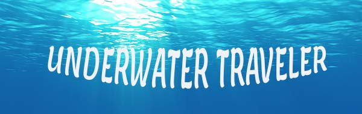

|
This image is made from photoshop. I want to give a realistic and fantasy setting under the ocean. So the traveler can explore under ancient structure in the ocean. And she doesn't need a diving suit! She could explore while the narwhals and jellyfishes swan over her. It was a challenge to select silhoutes of the architectre and arrange it in the underwater setting.